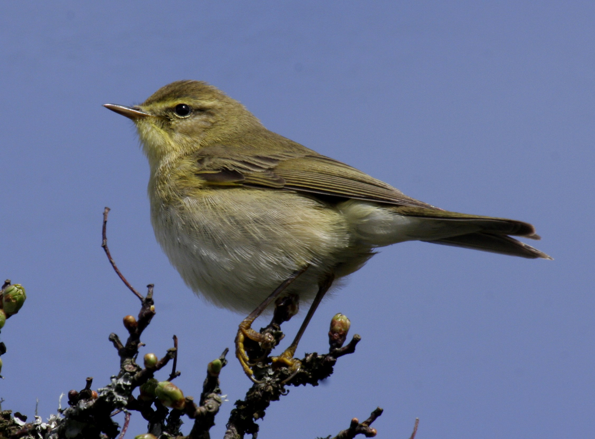

Tuesday, April the 8th, 2014
back to: title, date or indexes

The willow warbler is a type of bird. As its name suggests, it hangs around in the vicinity of willow trees and it warbles. In the notebook you keep in a waterproof pochette on a lanyard around your neck, there is probably a page headed Birds Beginning With “W” I Have Seen, on which you have written a list of birds beginning with “W”. When you see one of these birds, you either make a tick next to the name, or cross it out, decisively, with your propelling pencil. In order to achieve this result for the willow warbler, then, you need to be near willow trees, or possibly just one willow tree. And you also need to listen out for warbling.
If there are no willow trees in sight, and you cannot hear anything resembling a warble, you are very unlikely to spot a willow warbler. The first thing to do, then, is to get yourself close to some willows. Do not forget to take your binoculars with you, unless you are blessed with uncommonly piercing vision, in which case you probably have not bothered to buy, or rent, a pair of binoculars.
It may be that you live far, oh! so far, from any willows, and congenital infirmity forbids you from lengthy travel. In such circumstances, you need not give up all hope of spotting a willow warbler. The thing to do is to obtain, and plant in the ground in your garden, some willow saplings. If you do not have a garden, choose a patch of commons as close to your domain as possible, and plant the saplings there. You will, of course, have to wait some years for the saplings to grow into the kind of lush verdant willow trees likely to attract a willow warbler, but while you wait you can spend profitable time reading up on the bird, so you can be all the more certain you know one when you see one. And of course, reading books about birds can be done in the comfort of your armchair, if you have one, and you need not strain your feeble and debilitated limbs. If you do not have an armchair, you can simply sprawl on the floor.
Several other types of birds are known to hang around in the vicinity of willows. This is where your ability to recognise the warbling of a willow warbler becomes critical. Bear in mind, however, that not only do several other types of birds lurk in the willows, but several other types of birds also warble. I am not going to give you a complete, or even a partial, list of such birds, so do not ask. What you need to do is learn the distinctive warbling sound made by the willow warbler, which differentiates it from other warbling birds. There might be some tape recordings in your local lending library, or you can interrogate an ornithologist.
After much diligent study, you should be able to recognise the willow warbler with both your eyes and your ears. What you then have to do is drag yourself towards the patch of willows, peer intently and prick up your ears, and wait for a bird to appear that matches both the sight and sound of the willow warbler insofar as you have rammed those concepts into your head. You can then take your notebook out of its pochette, flip to the required page, and either tick or cross out the name of the bird.
As we have seen, depending on your physical robustness, or lack thereof, this may take many years to accomplish. But, boy oh boy, it will be worth it, with icing on top!
This is a second extract from Mr Key's Book Of Birds, a work in progress.
Hooting Yard on the Air, April the 10th, 2014 : “The Robin” (starts around 08:24)
Hooting Yard on the Air, June the 28th, 2018 : “The Robin” (starts around 06:49)